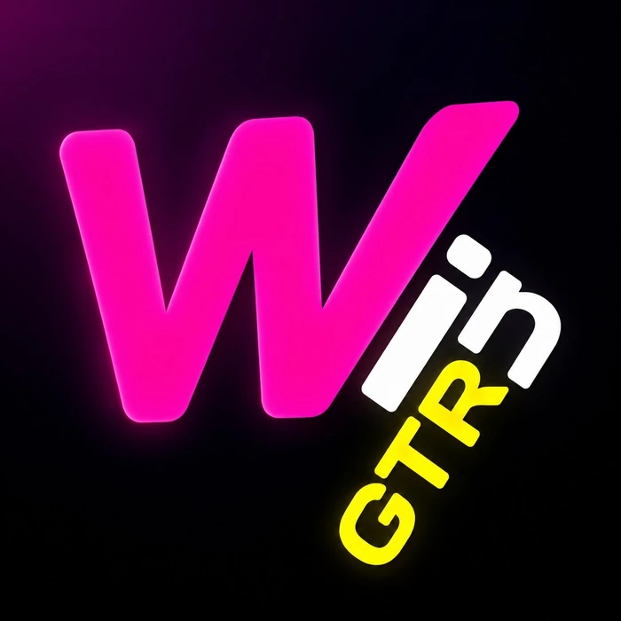

Включите JavaScript или откройте PDF на 27 экранов.
Все экраны доступны через оглавление.
Если YouTube не загружается или автор ограничил встраивание, открыть видео на YouTube ↗.
Единственный денежный расход сейчас сервер Play2Go в Германии, 560 ₽/мес. Подтверждено 13.11.2026. Число повторных покупок меняется только как учебная гипотеза.
Труд не вычитается из денежного результата. Налоги не включены. Начисленная доля не означает поступление денег.